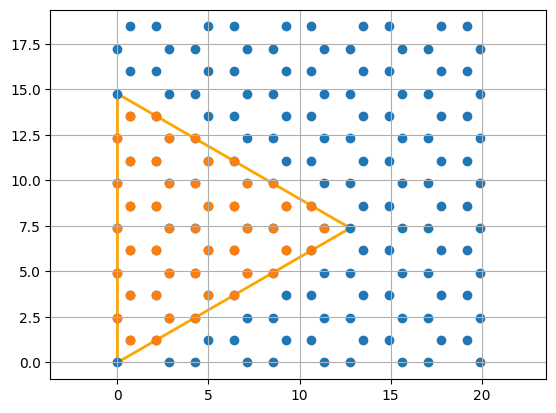

Linear response
We will calculate the optical absorption in the random phase approximation (RPA) and compare it to time-domain simulations in the linear response regime, subject to a weak external field. Note, however, that the time-domain simulaton is not limited to the linear-response case, as demonstrated in Cox et al..
RPA
First, we set up the RPA simulation. We will consider a triangular nanoflake
import jax.numpy as jnp
from granad import MaterialCatalog, Triangle
# get material
graphene = MaterialCatalog.get( "graphene" )
# cut a 15 Angström wide triangle from the lattice (can also be an arbitrary polygon)
flake = graphene.cut_flake( Triangle(15), plot = True )
# frequencies
omegas_rpa = jnp.linspace( 0, 6, 40 )

We obtain the polarizability for a uniform external field according to
\(\(\alpha_{ij}(\omega) = x_j \chi_0(\omega)/ (1- C \chi_0(\omega)) x_i\)\),
where \(\chi_0(\omega)\) is the bare density-density correlator and \(C\) is the Coulomb matrix, as in Thongrattanasiri et al.
Here, we focus on an external x-polarized field
polarizability = flake.get_polarizability_rpa(
omegas_rpa,
relaxation_rate = 1/10,
polarization = 0,
hungry = 2 )
From the imaginary part of the polarizability, we obtain the absorption spectrum as follows
Time-domain simulations
For the time-domain simulations, we specify a spectrally broad external illumination (i.e. a narrow pulse in time domain) to capture the system's response over a large frequency range.
We then compute the time-dependent dipole moment and Fourier transform it.
result = flake.master_equation(
expectation_values = [ flake.dipole_operator ],
end_time=40,
relaxation_rate=1/10,
illumination=pulse,
)
RHS compiled
RHS compiled
100.0 %
The polarizability tensor is given by \(\alpha_{ij} = p_i / E_j\). Here, we investigate the xx-component.
omega_max = omegas_rpa.max()
omega_min = omegas_rpa.min()
p_omega = result.ft_output( omega_max, omega_min )[0]
omegas_td, pulse_omega = result.ft_illumination( omega_max, omega_min )
absorption_td = jnp.abs( -omegas_td * jnp.imag( p_omega[:,0] / pulse_omega[:,0] ) )
We can now compare the two results.
import matplotlib.pyplot as plt
plt.style.use('ggplot')
plt.figure(figsize=(10, 6))
plt.plot(omegas_rpa, absorption_rpa / jnp.max(absorption_rpa), 'o', linewidth=2, label = 'RPA')
plt.plot(omegas_td, absorption_td / jnp.max(absorption_td), linewidth=2, ls = '--', label = 'TD' )
plt.xlabel(r'$\hbar\omega$', fontsize=20)
plt.ylabel(r'$\sigma(\omega)$', fontsize=25)
plt.title('Absorption spectrum as a function of photon energy', fontsize=15)
plt.legend()
plt.grid(True)
plt.show()